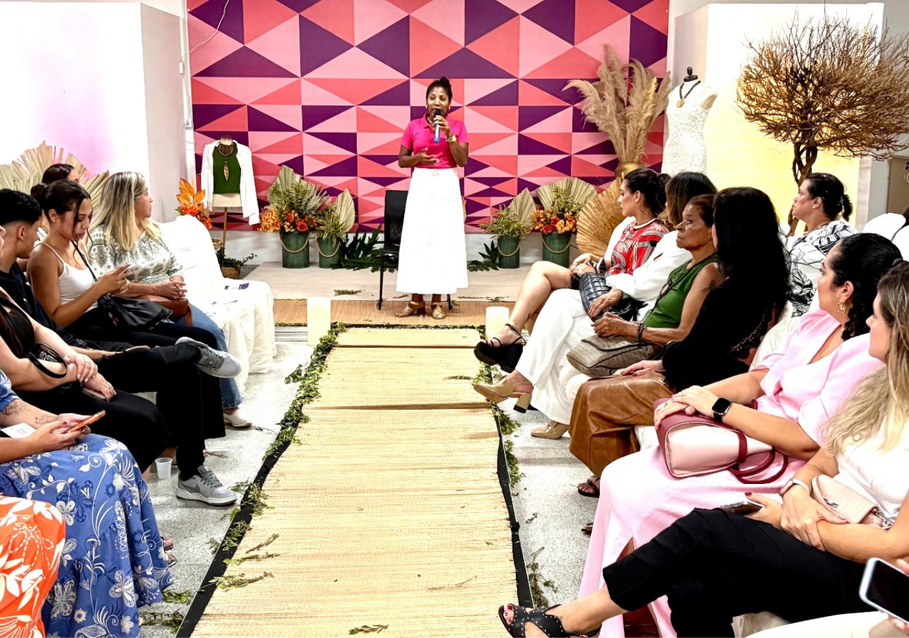
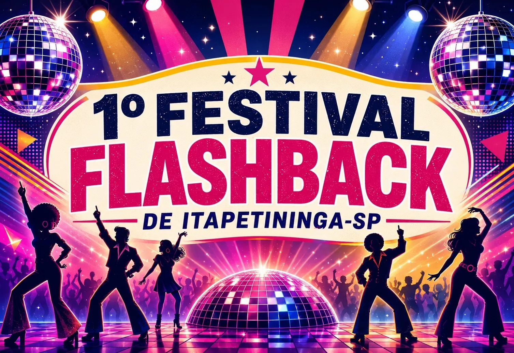
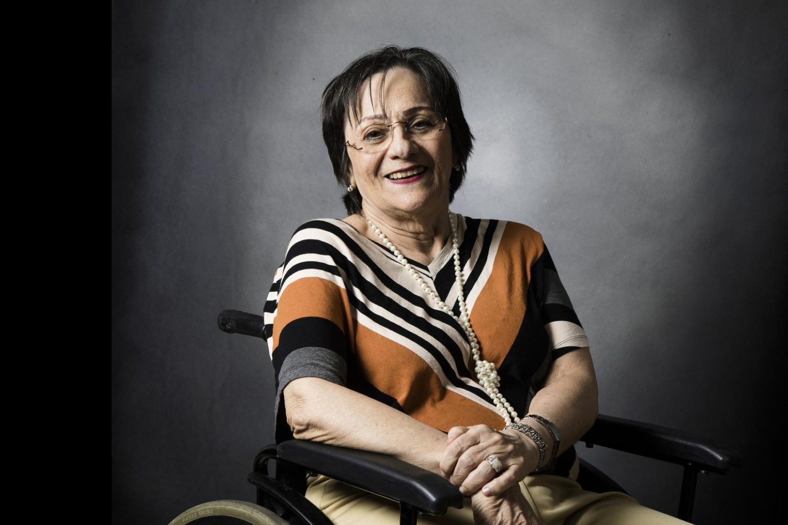
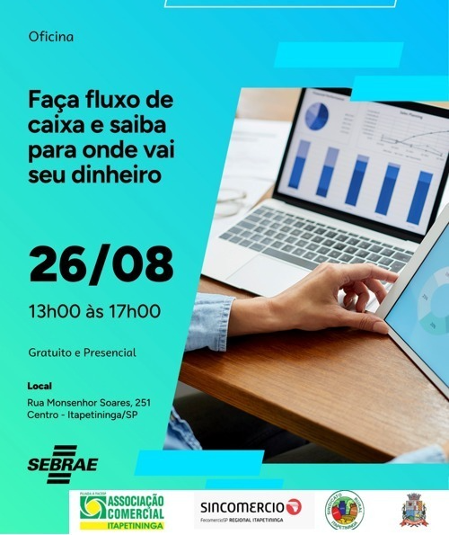
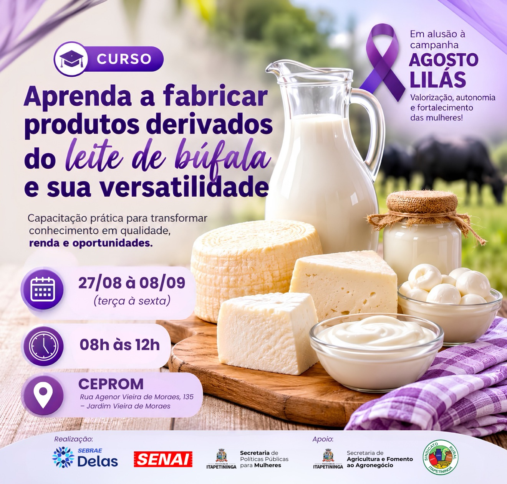

Empreendedorismo
Feira da Mulher Empreendedora fortalece negócios e conexões em Itapetininga
Moda autoral, marketing digital e networking abrem espaço para o protagonismo feminino.

Moda autoral, marketing digital e networking abrem espaço para o protagonismo feminino.
Últimas notícias
Conteúdo local sobre oportunidades, capacitação, direitos e iniciativas que valorizam as mulheres.

AgendaEvento reúne sucessos das décadas de 70, 80 e 90 e incentiva a doação de leite ao Fundo Social.

DireitosDuas décadas de uma legislação que transformou o enfrentamento à violência contra a mulher.

CapacitaçãoCapacitação do Sebrae ajuda participantes a entender receitas, despesas e decisões do negócio.

OportunidadeFormação prática incentiva qualificação, autonomia financeira e novas fontes de renda.
Nenhuma matéria encontrada. Tente outro termo ou categoria.
Nossa essência
O Elas em Foco nasce para reunir informação útil e dar espaço a quem empreende, cria, lidera e transforma Itapetininga todos os dias.
Mais que um portal de notícias, este é um ponto de encontro entre ideias, oportunidades e histórias reais.